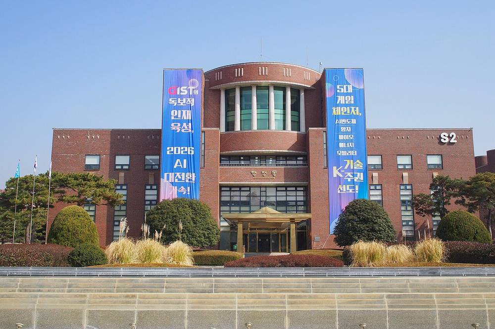
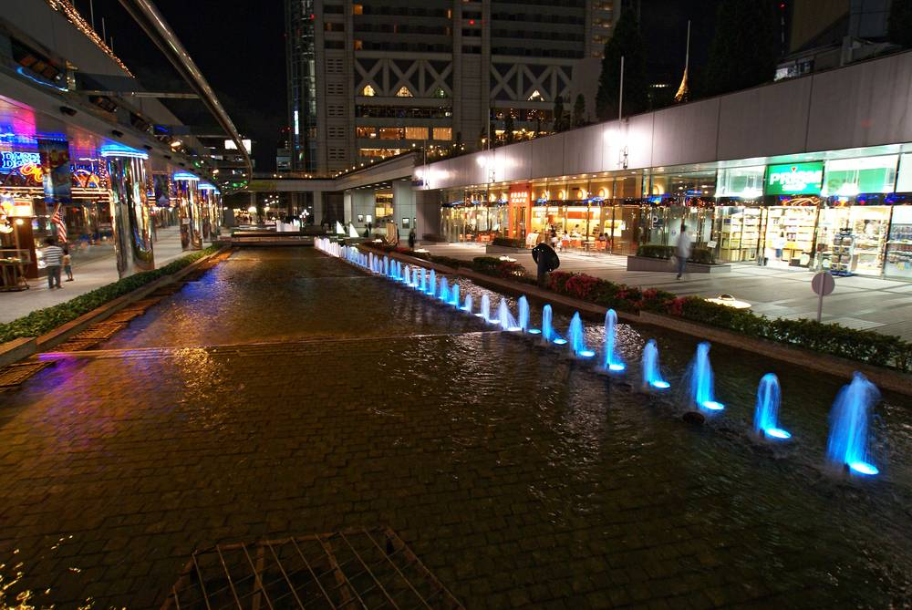

미국 앤아버시 공영 '지속가능 에너지 유틸리티', 저소득 가구까지 넓혀…2027년엔 시 전역에 개방
브라이언트 동네 90여 가구에 지붕 태양광·배터리 설치한 시범사업 다음 단계, 새로 20곳 설치



가수 장한별, KBS '불후의 명곡' 왁스 편 우승…'엄마의 일기'로 손승연 4연승 저지
421점으로 2점 차 정상, 치대 진학 포기하고 버틴 무명 시절 부모님께 바친 무대

야구 대표팀, 대만 6-4로 꺾고 APBC 결승행…김도영 결승 솔로포, 15일 일본과 우승 다툼
한국·대만·호주 1승 2패 동률서 팀 성적 지표로 결승 진출…프로 국제대회 일본전 1무 12패 끊을지 관심
오늘 주목할 소식
- 대통령 "적대적 M&A 걸림돌 전수조사"…대주주 지분 과다 상장사 퇴출 기준 검토 주문
- 예산소위 앞두고 여야 '미래대응기금' 공방…국힘 "정부 쌈짓돈, 전면 백지화" 민주 "삭감 외치며 지역구 사업은 증액 요구"
- "싸고 빠른 발전소는 수요 속에 있다"…전력수요 100GW 시대, 저녁엔 줄이고 낮엔 늘리는 '부하이전' 키우자
- 울산 750MW 부유식 해상풍력 '문무바람' 모회사, 25일 청산 여부 주총…자금 확보가 관건
- 제주에너지공사, 남는 풍력 전기를 수소로…ALK·PEM 수전해와 ESS 묶은 실증 착수
- 밴드 드래곤포니, 데뷔 첫 'MMA 2026' 무대…3인 체제 새 싱글 '콜링 백' 활동 중
햇빛소득마을 더보기 ›
정치 더보기 ›
대통령 "적대적 M&A 걸림돌 전수조사"…대주주 지분 과다 상장사 퇴출 기준 검토 주문
한국거래소 정책간담회, 의무공개매수 '50%+1주냐 100%냐' 맞서…금융위 "상장 분산 요건 검토"
정책 더보기 ›
대통령 "적대적 M&A 걸림돌 전수조사"…대주주 지분 과다 상장사 퇴출 기준 검토 주문
한국거래소 정책간담회, 의무공개매수 '50%+1주냐 100%냐' 맞서…금융위 "상장 분산 요건 검토"
산업·경제 더보기 ›
제주에너지공사, 남는 풍력 전기를 수소로…ALK·PEM 수전해와 ESS 묶은 실증 착수
11개 기관 참여 국가 연구개발과제 착수회의…2028년 통합 실증운전, 출력제어 시간대엔 수전해 늘리는 '플러스DR' 모의 참여
사회 더보기 ›
거창군, 신장수~무주영동 송전선로 후보 경과대역서 최종 제외…주민 반대대책위 25일 해산
한전 입지선정위, 덕유산·백두대간 생태축 들어 거창·함양·김천 동부권 빼기로
지역 더보기 ›
울산 750MW 부유식 해상풍력 '문무바람' 모회사, 25일 청산 여부 주총…자금 확보가 관건
스웨덴 헥시콘, 이사회는 존속 제안했지만 '운영자금 조달 중대한 불확실성' 명시…감사인은 의견 내지 않아
오피니언 더보기 ›
"싸고 빠른 발전소는 수요 속에 있다"…전력수요 100GW 시대, 저녁엔 줄이고 낮엔 늘리는 '부하이전' 키우자
우종률 고려대 에너지환경대학원 교수 기고…12차 전기본 수요관리 목표 20.8GW를 실제 자원으로 만들 세 가지 조건
시민에너지 더보기 ›
미국 앤아버시 공영 '지속가능 에너지 유틸리티', 저소득 가구까지 넓혀…2027년엔 시 전역에 개방
브라이언트 동네 90여 가구에 지붕 태양광·배터리 설치한 시범사업 다음 단계, 새로 20곳 설치
햇빛소득마을 더보기 ›
전남광주시의회 "계통 못 잇는 태양광은 희망고문"…햇빛소득마을 126곳 중 바로 접속 가능한 곳 5곳뿐
신민호 의원, 에너지산업본부 행정사무감사서 지적…영광 월평마을 1MW에 18억 원 들였지만 수익 없어, "소규모 농가 우선·주민 균등 참여 보장해야"
연예·스포츠 더보기 ›
가수 장한별, KBS '불후의 명곡' 왁스 편 우승…'엄마의 일기'로 손승연 4연승 저지
421점으로 2점 차 정상, 치대 진학 포기하고 버틴 무명 시절 부모님께 바친 무대
米アナーバー市の公営「持続可能エネルギー・ユーティリティ」、低所得世帯まで拡大…2027年に市全域へ開放
ブライアント地区の90余世帯に屋根置き太陽光と蓄電池を設置したパイロット事業の次の段階、新たに20カ所設置


「安くて速い発電所は需要の中にある」…電力需要100GW時代、夕方は減らし昼は増やす「負荷移動」を育てよう
ウ・ジョンリュル高麗大学エネルギー環境大学院教授が寄稿…第12次電力需給基本計画の需要管理目標20.8GWを実際の資源にする3つの条件

蔚山の750MW浮体式洋上風力「文武バラム」の親会社、25日に清算可否の株主総会…資金確保がカギ
スウェーデンのヘキシコン、取締役会は存続を提案も「運転資金調達に重大な不確実性」と明記…監査人は意見を表明せず
今日の注目ニュース
- 済州エネルギー公社、余った風力の電気を水素に…ALK・PEM水電解とESSを組み合わせた実証に着手
- 英コベントリー市、E.ONとグリーンベルトに25MW太陽光を推進…市議「E.ONがいくら稼ぐか公開を」
- 「8GWの再エネ拠点で咸平の100年を開こう」…咸平郡繁栄会長、ひだまり年金・345kV変電所誘致など4大課題を提案
- 全南光州市議会「系統につなげない太陽光は希望拷問」…ひだまり所得村126カ所のうち即時接続できるのは5カ所だけ
- 独バイエルン州イーゼンの市民風力協同組合、組合員470人・出資金80万ユーロ…「着工は数年後、今は準備段階」
- 「半導体を待つ間、再エネの仕事で地元企業を生かすべき」…全南光州エネルギー公社の早期設立を提案
太陽光所得村 もっと見る ›
政治 もっと見る ›
英コベントリー市、E.ONとグリーンベルトに25MW太陽光を推進…市議「E.ONがいくら稼ぐか公開を」
7,000世帯分の電力・事業費はE.ON負担、市は所有地の賃料と電力購入を検討…2カ所目の用地も物色
政策 もっと見る ›
韓成淑首相「優れた自治体政策を全国へ」…新安の利益共有制・霊光の太陽光・風力ベーシックインカムを代表例に
国会「参よい地方自治政策大会」の祝辞で「太陽光所得村とともに拡大」…19自治体が成果発表
産業・経済 もっと見る ›
済州エネルギー公社、余った風力の電気を水素に…ALK・PEM水電解とESSを組み合わせた実証に着手
11機関が参加する国家研究開発課題のキックオフ会議…2028年に統合実証運転、出力制御の時間帯は水電解を増やす「プラスDR」に模擬参加
社会 もっと見る ›
居昌郡、新長水～茂朱永同送電線の候補経過帯から最終的に除外…住民の反対対策委は25日に解散
韓電の立地選定委、徳裕山・白頭大幹の生態軸を理由に居昌・咸陽・金泉の東部圏を除外
地域 もっと見る ›
蔚山の750MW浮体式洋上風力「文武バラム」の親会社、25日に清算可否の株主総会…資金確保がカギ
スウェーデンのヘキシコン、取締役会は存続を提案も「運転資金調達に重大な不確実性」と明記…監査人は意見を表明せず
オピニオン もっと見る ›
「安くて速い発電所は需要の中にある」…電力需要100GW時代、夕方は減らし昼は増やす「負荷移動」を育てよう
ウ・ジョンリュル高麗大学エネルギー環境大学院教授が寄稿…第12次電力需給基本計画の需要管理目標20.8GWを実際の資源にする3つの条件
市民エネルギー もっと見る ›
米アナーバー市の公営「持続可能エネルギー・ユーティリティ」、低所得世帯まで拡大…2027年に市全域へ開放
ブライアント地区の90余世帯に屋根置き太陽光と蓄電池を設置したパイロット事業の次の段階、新たに20カ所設置
太陽光所得村 もっと見る ›
全南光州市議会「系統につなげない太陽光は希望拷問」…ひだまり所得村126カ所のうち即時接続できるのは5カ所だけ
シン・ミンホ議員がエネルギー産業本部の行政監査で指摘…霊光・月坪村の1MWに18億ウォン投じたが収益ゼロ、「小規模農家優先・住民の均等参加を保障すべき」
“便宜又快的电厂就在需求之中”…电力需求100GW时代，应发展晚间少用、白天多用的“负荷转移”
高丽大学能源环境研究生院教授禹钟律撰文：让第12次电力供需基本计划需求管理目标20.8GW成为真正资源的三个条件
阳光收入村 更多 ›
政治 更多 ›
英国考文垂市与E.ON在绿带推进25MW光伏…市议员："公开E.ON能赚多少"
可供7,000户用电、项目费用由E.ON承担，市政府考虑收取自有土地租金并购电…同时物色第二个园区
政策 更多 ›
韩成淑总理：“好的地方政策推向全国”…以新安收益共享制、灵光阳光·风力基本收入为代表案例
在国会“参好地方自治政策大会”致辞称“与阳光收入村一同扩大”…19个地方政府发表成果
产业·经济 更多 ›
济州能源公社把多余风电变成氢气…启动ALK、PEM电解与储能结合的示范项目
11家机构参与的国家研发课题启动会召开：2028年整合示范运行，弃电时段增加电解负荷的“正向需求响应”模拟参与
社会 更多 ›
居昌郡最终被排除在新长水—茂朱永同输电线路候选走廊之外…居民反对对策委25日解散
韩电选址委员会以德裕山、白头大干生态轴为由，排除居昌、咸阳、金泉东部地区
地方 更多 ›
蔚山750MW漂浮式海上风电“文武风”母公司25日召开股东大会决定是否清算…融资成关键
瑞典Hexicon董事会提议存续，但明确“营运资金筹措存在重大不确定性”，审计师未发表意见
评论 更多 ›
“便宜又快的电厂就在需求之中”…电力需求100GW时代，应发展晚间少用、白天多用的“负荷转移”
高丽大学能源环境研究生院教授禹钟律撰文：让第12次电力供需基本计划需求管理目标20.8GW成为真正资源的三个条件
市民能源 更多 ›
美国安娜堡市公营“可持续能源公用事业”扩大至低收入家庭…2027年向全市开放
在布莱恩特社区90多户安装屋顶光伏和电池的试点进入下一阶段，新增20处安装
阳光收入村 更多 ›
全南光州市议会："接不上电网的光伏是希望折磨"…126个阳光收入村中能立即并网的仅5个
申珉浩议员在能源产业本部行政监察中指出：灵光月坪村1MW电站投入18亿韩元却零收益，"应优先小农户、保障居民平等参与"
Ann Arbor's municipal Sustainable Energy Utility expands to income-eligible households, aims to open citywide in 2027
Next phase of the pilot that put rooftop solar and batteries on more than 90 Bryant-area homes; 20 new installations coming
'The cheapest, fastest power plant lies in demand': expert urges load shifting for Korea's 100 GW era
Column by Korea University professor Woo Jong-ryul on three conditions for turning the 12th Basic Plan's 20.8 GW demand-management target into a real resource
Parent of Ulsan's 750 MW floating offshore wind project Munmu Baram to vote on liquidation on the 25th; funding is key
Sweden's Hexicon board proposes continuing but cites 'material uncertainty' over working capital; auditor declines to give an opinion
Today's highlights
- Jeju Energy Corporation starts pilot turning surplus wind power into hydrogen with ALK and PEM electrolysers plus storage
- Coventry pursues 25 MW green belt solar farm with E.ON — councillors demand to know what the company earns
- "Open Hampyeong's next century with an 8 GW renewable hub": civic leader proposes sunlight pension and 345 kV substation
- South Jeolla-Gwangju councillor: solar without grid access is "false hope" — only 5 of 126 sunlight income villages can connect now
- Bavarian village wind cooperative in Isen reaches 470 members and €800,000: 'Construction is years away; we are preparing'
- "Use renewable work to keep local firms alive while waiting for chip fabs": call to fast-track a Jeonnam-Gwangju energy corporation
Sunlight Income Village More ›
- South Jeolla-Gwangju councillor: solar without grid access is "false hope" — only 5 of 126 sunlight income villages can connect now
- Suwon Haetbit Power takes shape: 5MW on 13 public car parks first, 20MW and 32.8 billion won in total, with public dividends going to a climate fund
- Hoengseong County now has five sunlight income villages as three more join in second round
Politics More ›
Coventry pursues 25 MW green belt solar farm with E.ON — councillors demand to know what the company earns
Scheme would power over 7,000 homes at no cost to the council, which eyes higher rent and possible power purchase; search on for a second site
- Progressive Party: host of the 'solar Olympics' ranks 61st on climate action, calls for halt to nuclear restarts
- PM Han: good local policies should go nationwide — cites Sinan's profit-sharing and Yeonggwang's solar-wind basic income
- Jeju councillor asks where pledged 10 GW of offshore wind and 1 trillion won energy basic income went, demands island-wide benefit roadmap
- Jeju presents 2035 carbon-neutral goal at COP31, pledges to return renewable profits to residents
Policy More ›
PM Han: good local policies should go nationwide — cites Sinan's profit-sharing and Yeonggwang's solar-wind basic income
Speaking at a National Assembly local-government policy contest, she said they are spreading alongside the solar income village programme
- Jeju presents 2035 carbon-neutral goal at COP31, pledges to return renewable profits to residents
- Ahead of Korea's agrivoltaics act on Dec. 17, farm ministry plans per-person capacity cap to stop outside 'land-grabbing'
- Korea's farm ministry to unveil crop list and per-farm caps for agrivoltaics by end of November
- Korea to tax Sunlight Income Village solar land separately for property tax, from January 2027
Industry & Economy More ›
Jeju Energy Corporation starts pilot turning surplus wind power into hydrogen with ALK and PEM electrolysers plus storage
Kick-off for national R&D project with 11 partners; integrated trial operation from 2028 and simulated 'plus DR' to absorb power during curtailment hours
- Minnesota electric co-op Crow Wing Power returns almost $3 million to members as credit on November bills
- Calgary power and gas retailer gives 100% of profits to local LGBTQ+ groups: 'bills become a community fund'
- Anaheim's city-owned utility signs 20-year deal for 150 MW of solar and 138.5 MW of batteries, worth about $955 million
- Hampyeong pushes Bitgreen national industrial complex as RE100 pilot and Korea's first renewable self-reliant city
Society More ›
Geochang finally removed from candidate corridor for Sinjangsu–Muju Yeongdong power line; residents' opposition committee to disband on 25th
KEPCO siting committee drops eastern areas of Geochang, Hamyang and Gimcheon, citing Deogyusan and Baekdudaegan ecological corridor
- Residents under the water and power lines for Korea's chip cluster ask for a livelihood first — solar income, not pensions, offered in Hwasun
- South Chungcheong school solar output records found erratic — eight months exceeding a full year by 36%, or reported as zero
- KEPCO passes 100 grid siting decisions, up from 25 a year to 58, including first substation requested by residents
- Solar hub for women entrepreneurs and farmers opens in northern Ghana, serving about 60 communities
Regions More ›
Parent of Ulsan's 750 MW floating offshore wind project Munmu Baram to vote on liquidation on the 25th; funding is key
Sweden's Hexicon board proposes continuing but cites 'material uncertainty' over working capital; auditor declines to give an opinion
- Coventry pursues 25 MW green belt solar farm with E.ON — councillors demand to know what the company earns
- North Jeolla turns to batteries and virtual power plants as grid congestion blocks even village solar
- Haman County teams up with local public corporation to put solar on three public car parks, aiming for 2030 completion
- Incheon mayor meets Ørsted executives, but fishers object: 'They shut the council and met only the mayor'
Opinion More ›
'The cheapest, fastest power plant lies in demand': expert urges load shifting for Korea's 100 GW era
Column by Korea University professor Woo Jong-ryul on three conditions for turning the 12th Basic Plan's 20.8 GW demand-management target into a real resource
- "Open Hampyeong's next century with an 8 GW renewable hub": civic leader proposes sunlight pension and 345 kV substation
- "Use renewable work to keep local firms alive while waiting for chip fabs": call to fast-track a Jeonnam-Gwangju energy corporation
- "Residents under transmission towers must count too": Seocheon and Boryeong brace for Saemangeum–Sinseosan 345 kV line
- "Public car-park solar should be owned and run by citizens": Incheon environmental group urges citizen-equity criteria in tenders
Citizen Energy More ›
Ann Arbor's municipal Sustainable Energy Utility expands to income-eligible households, aims to open citywide in 2027
Next phase of the pilot that put rooftop solar and batteries on more than 90 Bryant-area homes; 20 new installations coming
- Bavarian village wind cooperative in Isen reaches 470 members and €800,000: 'Construction is years away; we are preparing'
- Minnesota electric co-op Crow Wing Power returns almost $3 million to members as credit on November bills
- Mohaet's Haetsal Green cooperative reaches 1,427 operating solar plants and 176.1MW, up 46 in a month
- Rappahannock Tribe puts rooftop solar on education lodge at its ancestral capital — Native-owned firm handled grants to installation at no cost
Sunlight Income Village More ›
South Jeolla-Gwangju councillor: solar without grid access is "false hope" — only 5 of 126 sunlight income villages can connect now
Councillor Shin Min-ho tells audit that a 1 MW plant in Yeonggwang's Wolpyeong village cost 1.8 billion won but has earned nothing; calls for small farmers first and equal resident participation
- Suwon Haetbit Power takes shape: 5MW on 13 public car parks first, 20MW and 32.8 billion won in total, with public dividends going to a climate fund
- Hoengseong County now has five sunlight income villages as three more join in second round
- South Jeolla-Gwangju council: Sunlight income villages need support after selection, not just at launch
- Korea says conditionally selected Sunlight Income Villages will get help to break ground; storage scheme to be tendered in November, grid priority for resident solar under 1MW from end-December